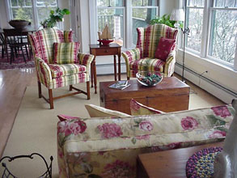

STANDARD SITE | Map | Shop Inventory | Services | Home
The art of decorating with antiques is achieved by starting with a floor
plan, then applying design, detail, colors, textiles, lighting, wall treatments,
coupled with rugs, carpets and/or floor coverings, with the end result being a
coordination of all aspects.
Francine’s specialty as a decorator is found on a vision of reality. The result
is what you might call elegance with a gratification of achieving total comfort
through creativity.
The most important facet of decorating for me is to always stay focused on my
client's priorities and lifestyle. Simply stated: my priority is to listen to
what my client is seeking to achieve, then present various options for
consideration, which in many cases includes incorporating a client’s current
furniture and accessories with an accent of antiques.
When working with a variety of tastes, I get the opportunity to explore
different levels of interest, and in many cases I assist my clients amass
important lasting collections of antique pieces to compliment their taste.

STANDARD SITE | Map | Shop Inventory | Services | Home